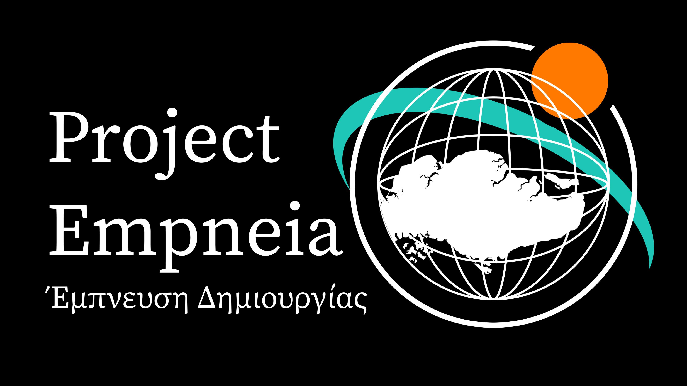

Project Empneia
19/10/2024

I've recently embarked on a passion project called Project Empneia.
The name "Empneia" combines the Greek words Έμπνευση (ém-pneh-see) meaning "inspiration" and Δημιουργίας (dhee-mee-ou-ree-yás), meaning "creation." Together, these words form the essence of the project: "Inspiration of Creation."
Project Empneia was born out of my realization that the algorithms used by social media platforms often hinder meaningful learning and media consumption. I found myself wasting hours online, putting off the things I truly wanted to explore in favor of maintaining my online presence.
This project is my response to that. I designed this website to serve as a personal archive and a place where I can share the discoveries and content I truly value.
Project Empneia is divided into six parts, each inspired by a Greek god and serving a unique purpose:
- Apolleon (From Apollo, god of the arts, and Archeion, meaning archive)
- Athenosis (From Athena, goddess of wisdom, and Gnosis, meaning knowledge)
- Hermein (From Hermes, god of travelers, and Minyma, meaning message)
- Dionemia (From Dionysus, god of ecstasy, and Demiourgia, meaning creativity)
- Hephaedia (From Hephaestus, god of artisans, and Demiourgos, meaning creation)
- Poseiga (From Poseidon, god of the sea, and Ploigisi, meaning navigation)
All of these sections are accessed through Zeulchos, derived from Zeus, the ruler of Mount Olympus, and Elenchos, the Greek word for control. Zeulchos serves as the central directory and homepage for the entire site.
If you explore this site, you'll notice it showcases various inspirations in art and media that deeply resonate with me. From the Greek language and mythology reflected in the naming conventions, to images of architectural buildings scattered across different pages, and the minimalistic, terminal-inspired UI seen throughout—each element represents something I am currently passionate about. These design choices are intended to offer you a glimpse into my world of inspiration, allowing you to see what moves me creatively.
As of now, only Apolleon, Athenosis, and Hephaedia are up and running, and there is minimal content available on each of them. Please keep in mind, this is purely a passion project that I work on during the weekends, and updates will be rolled out whenever I can find the time. Since stepping away from social media, I've experienced a renewed sense of freedom and energy, which I plan to channel into more creative endeavors, including this one.
Thank you for taking an interest in my work. If you are on a similar journey of self-discovery and creativity, I wish you the best of luck.
p.s. btw I got stickers otw if anyone wants some lol
Go Back